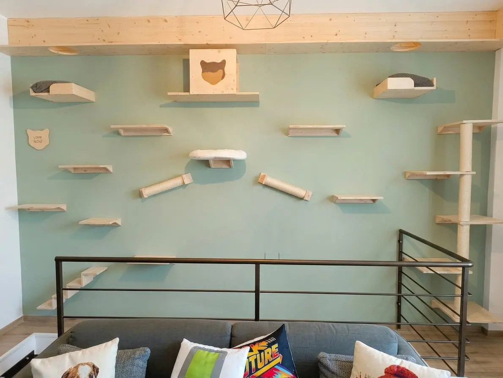
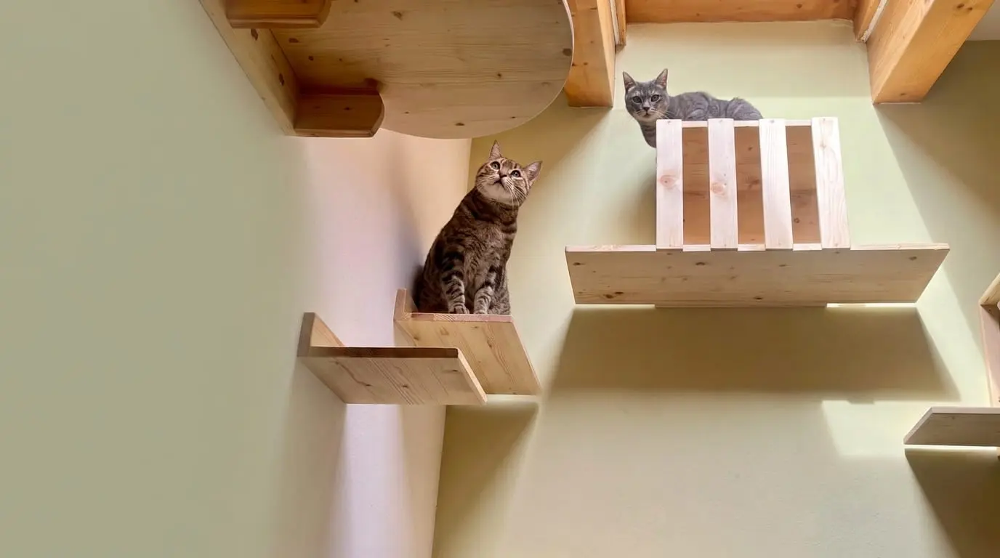
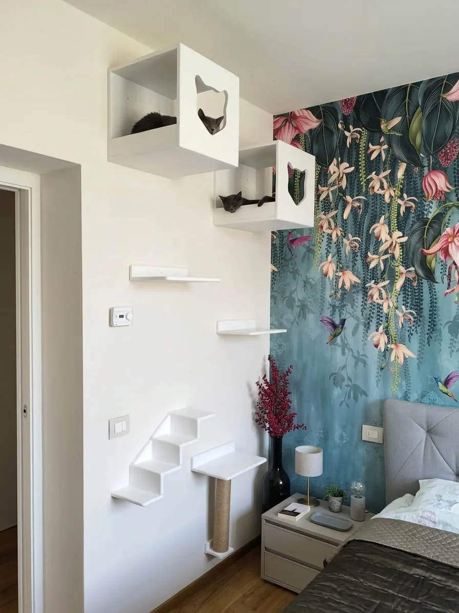
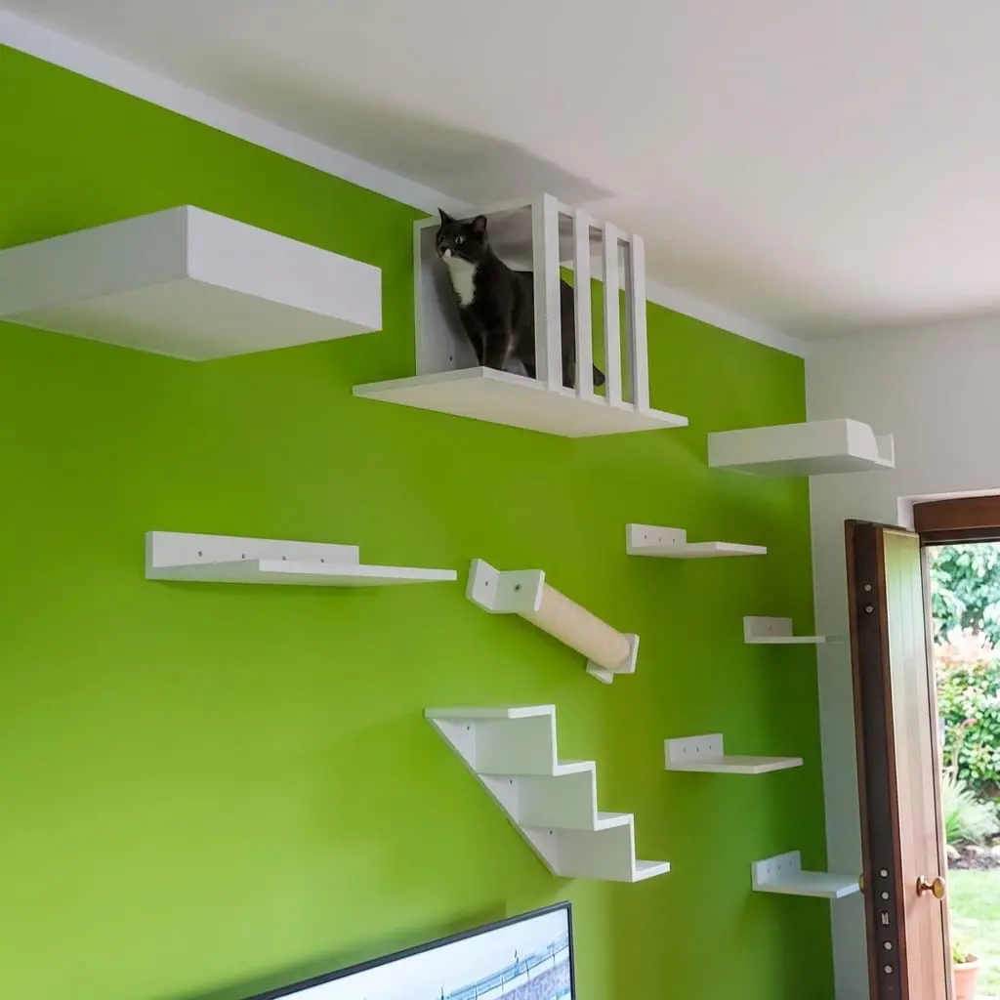
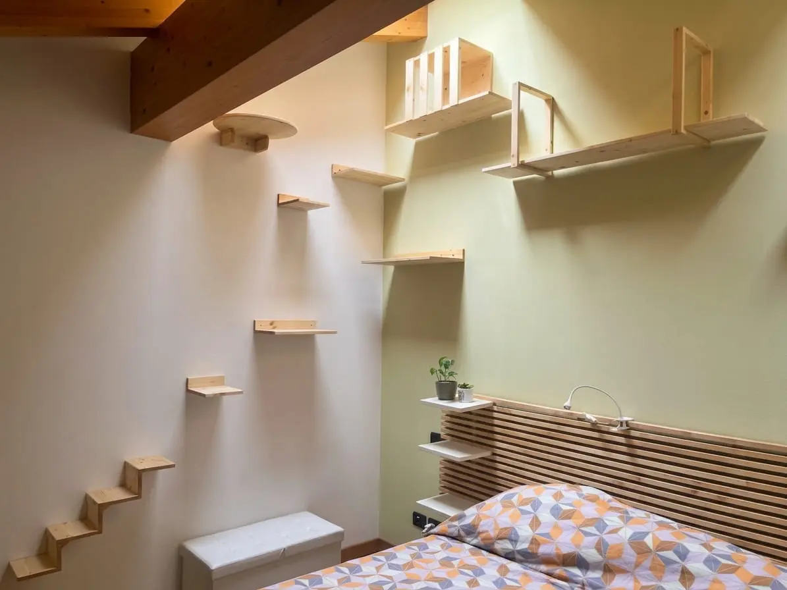
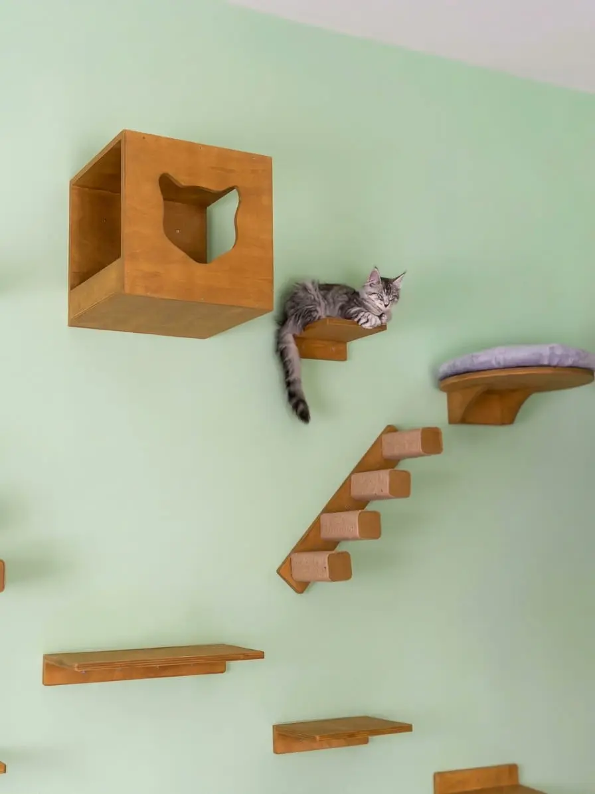
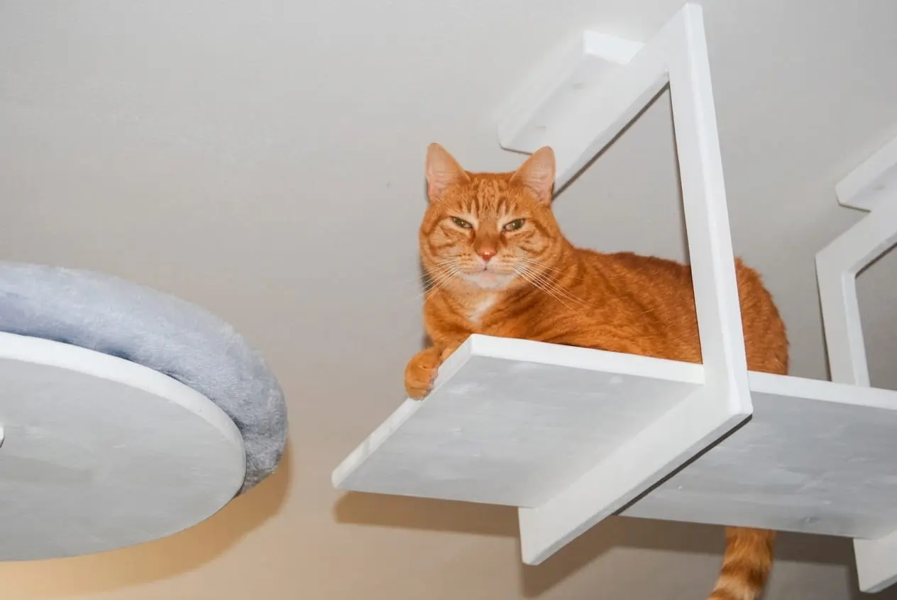
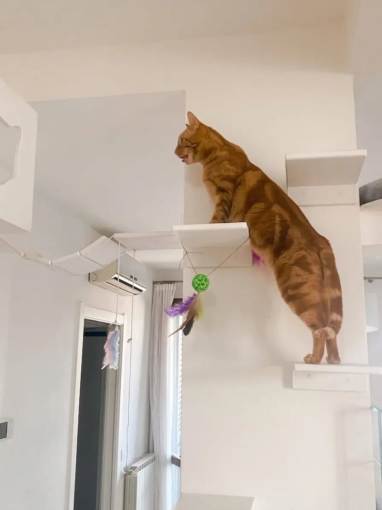
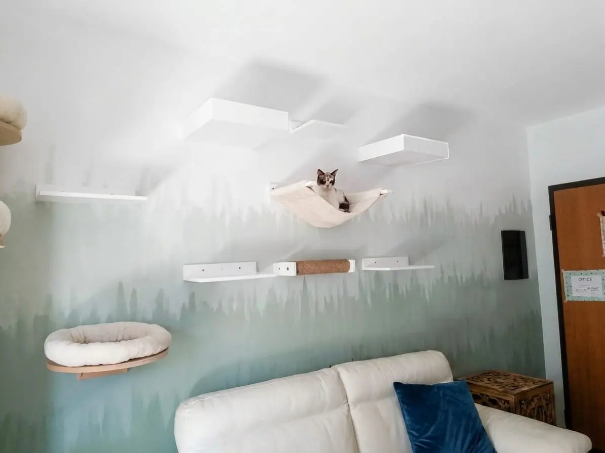

☰
Ogni spazio nasce dall'ascolto del gatto, dalla casa che lo accoglie e dalle abitudini della famiglia.














Raccontaci le sue abitudini e lo spazio che hai a disposizione.
Contattaci